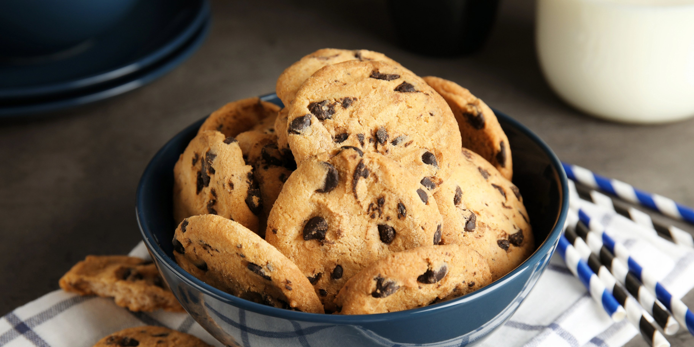

Печиво із шоколадними дропсами — хрумка спокуса до чаю
Автор Ольга Мартиновська

Печиво із шоколадними дропсами — це класичний американський десерт, який завоював любов у всьому світі. Воно має хрустку скоринку і ніжну, трохи тягучу середину, а шматочки шоколаду додають йому яскравого смаку. Шоколадне печиво — це ідеальний вибір для домашнього чаювання, свят чи просто для гарного настрою.
Інгредієнти
- Цукор 120г
- Борошно 300
- розпушувач 11г
- Масло вершкове 160г
- Яйця курячі 1 шт
- Шоколадні дропси 380г
Змішайте сухі інгредієнти
Насипте в глибоку миску попередньо просіяне борошно, додайте цукор звичайний і коричневий, розпушувач і розмішайте.
Додайте решту інгредієнтів і замісіть тісто.
Вершкове масло подрібніть на маленькі шматочки, додайте у миску і перетріть руками, поки суміш не стане однорідною і сипучою. Додайте яйце і замісіть пісочне тісто.
Всипте порівну чорні та молочні шоколадні дропси, розподіливши рівномірно по тісту.
Сформуйте тісто в «ковбаску», загорніть в плівку й охолодіть. Потім наріжте кружальцями по 1 см висотою
Викладіть кружальця з тіста на деко й випікайте 12 хвилин при 170°C. Охолодіть готове печиво 5-6 хвилин і можна ласувати.